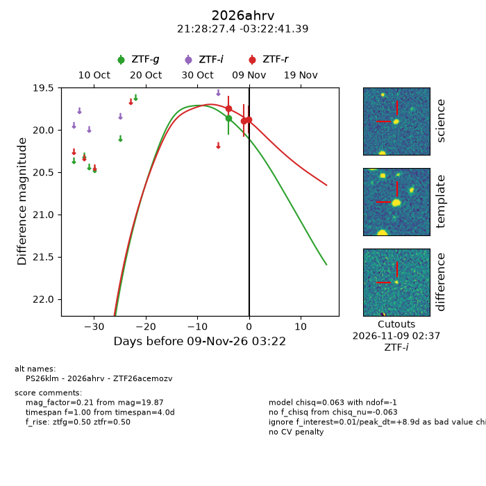
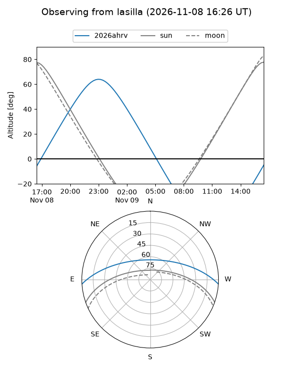
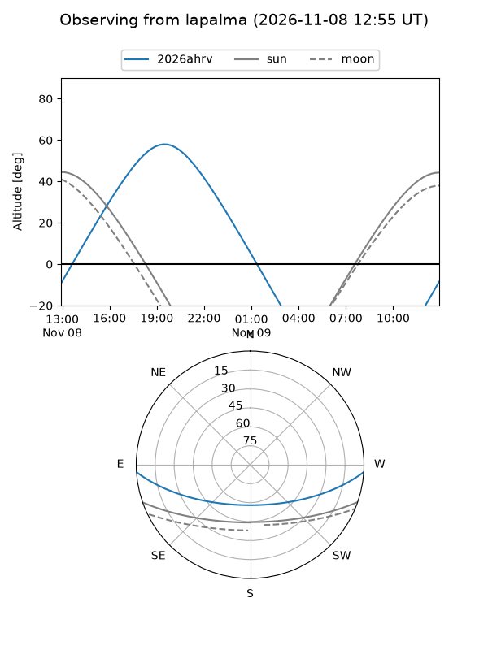
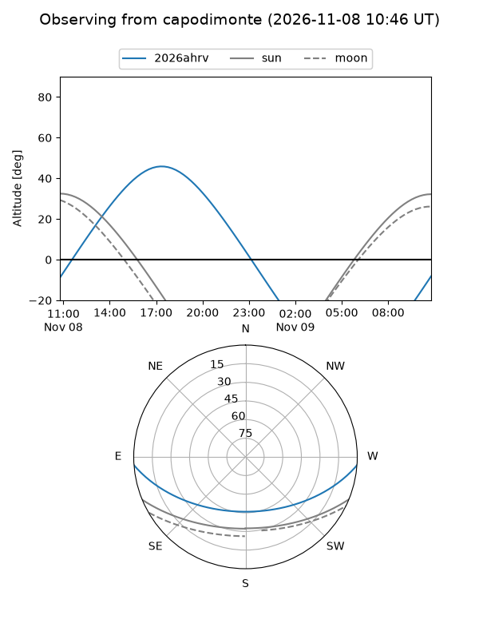
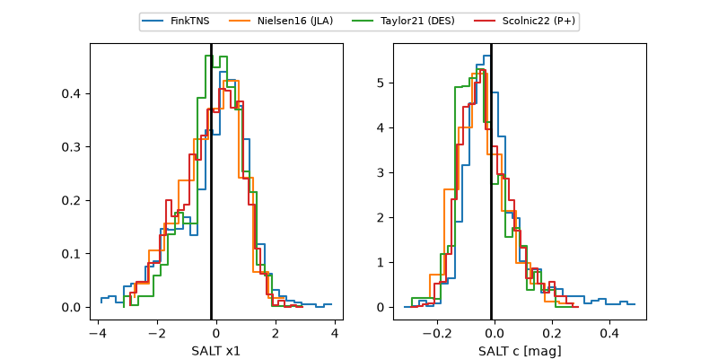

2026ahrv
Target 2026ahrv at 2026-11-09 03:24
Aliases and brokers:
FINK-ZTF: ztf.fink-portal.org/ZTF26acemozv
Lasair-ZTF: lasair-ztf.lsst.ac.uk/objects/ZTF26acemozv
ALeRCE-ZTF: alerce.online/object/ZTF26acemozv
YSE-PZ: ziggy.ucolick.org/yse/transient_detail/2026ahrv
TNS name: wis-tns.org/object/2026ahrv
Direct TNS query: direct search
alt names
ZTF26acemozv (ztf,fink_ztf)
2026ahrv (tns,yse)
PS26klm (panstarrs)
Coordinates:
equatorial (ra, dec) = 322.1142,-3.37816
equatorial (HMS+DMS) = 21:28:27.41,-03:22:41.39
galactic (l, b) = (49.8817,-36.08948)
Flags:
peak dt: +8.9
Photometry:
last ztfg=19.86, ztfr=19.87
1 ztfg, 3 ztfr detections
Lightcurve

Visibility



Additional plots
